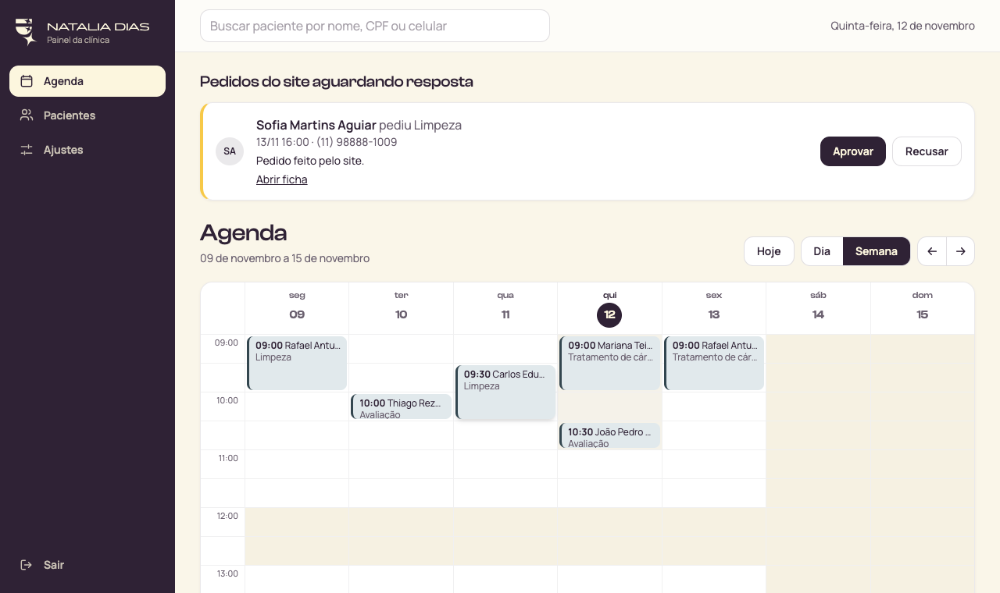
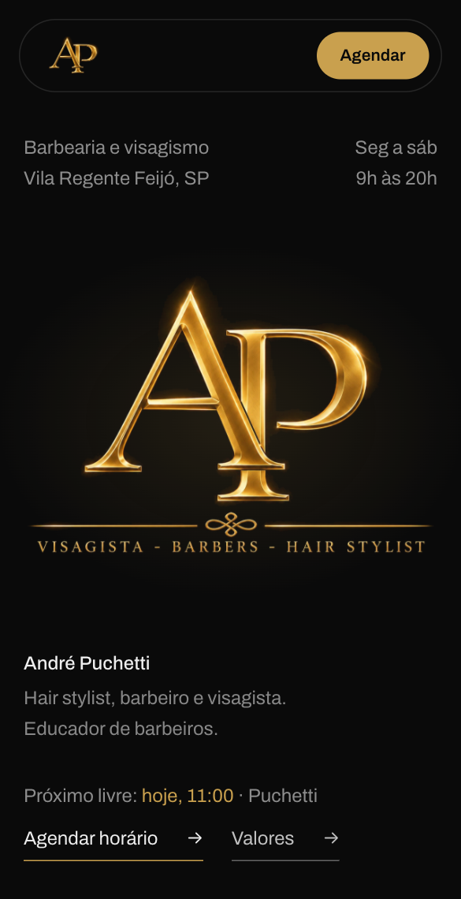

Quem somos, o que já está funcionando com nossos clientes e como isso pode ficar na Clínica Eduardo Parente.
Material da reunião de 13 de novembro de 2026.
Ver os sistemas funcionando

Construímos o sistema em volta do jeito que a sua equipe já trabalha: agenda, ficha do paciente, painel de gestão e WhatsApp, num lugar só.
Somos uma empresa pequena de São Paulo, de propósito. Quem conversa com vocês é quem desenha, programa e dá suporte depois. Nada de pacote pronto que obriga a clínica a mudar a rotina para caber no sistema.
Gravações dos sistemas que entregamos, com dados de demonstração. Toque em um item para ver.
Também no ar: um sistema de saúde e segurança do trabalho que atende mais de 700 empresas, com agenda de exames, documentos e relatórios.
Simulações do que montaríamos para vocês, a partir do que já existe. Os nomes são fictícios.
O Dr. Eduardo continua no controle. Nenhuma resposta sobre tratamento sai sem passar pela equipe, e dúvida clínica vai sempre para ele.
Brandon Moruno, William Lima e Matheus Dias.
O que nos ajuda a desenhar o caminho certo para a clínica.